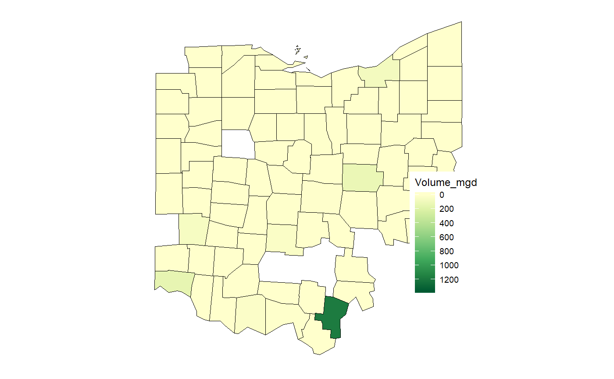

Returns map of data element mapped by sites that have lat-lons Only works with one data element as currently written Assumes the s.wuds dataframe being used as input has already been subsetted using filter functions (by site type, state, or county, years, etc.) that is, no subsetting is done inside this function Dataframe must not have more than one row per site ID Point sizes are scaled to value
map_sites(s.wuds, data.element, year, state, norm.element = NA, unit.type = "county", site.from.to = "from")
| s.wuds | dataframe, the swuds water use data |
|---|---|
| data.element | chr, data element to be plotted |
| year | int, the year of interest to be mapped (defines historical basis for counties) |
| state | character name of state |
| norm.element | chr, element used to normalize data.element |
| unit.type | chr, type of unit to be mapped; acceptable options are "county", "huc", or "aquifer" |
| site.from.to | chr, either 'from' or 'to' to designate the site lats-lons to use; the 'from' site or the 'to' site |
s.wuds <- swudsSample #example data from OHIO # subset for this example s.wuds <- s.wuds[which(s.wuds$FROM_SITE_TP_CD == "AS" & s.wuds$YEAR == 2010 &s.wuds$Month_num == 8),] data.element <- "Volume_mgd" state <- "Ohio" year <- 2010 unit.type <- "county" norm.element <- NA sites.map <- map_sites(s.wuds, data.element, year, state)#> Warning: Ignoring unknown aesthetics: labeldata.element <- "JUL_VAL" norm.element <- "ANNUAL_VAL"